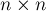
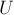

MAXimal
добавлено: 16 Sep 2010 17:09
редактировано: 2 Nov 2012 18:32
Содержание [скрыть]
Матрица Татта
Матрица Татта — это изящный подход к решению задачи о паросочетании в произвольном (не обязательно двудольном) графе. Правда, в простом виде алгоритм не выдаёт сами рёбра, входящие в паросочетание, а только размер максимального паросочетания в графе.
Ниже мы сначала рассмотрим результат, полученный Таттом (Tutte) для проверки существования совершенного паросочетания (т.е. паросочетания, содержащего  рёбер, и потому насыщающего все
рёбер, и потому насыщающего все  вершин). После этого мы рассмотрим результат, полученный позже Ловасом (Lovasz), который уже позволяет искать размер максимального паросочетания, а не только ограничивается случаем совершенного паросочетания. Затем приводится результат Рабина (Rabin) и Вазирани (Vazirani), которые указали алгоритм восстановления самого паросочетания (как набора входящих в него рёбер).
вершин). После этого мы рассмотрим результат, полученный позже Ловасом (Lovasz), который уже позволяет искать размер максимального паросочетания, а не только ограничивается случаем совершенного паросочетания. Затем приводится результат Рабина (Rabin) и Вазирани (Vazirani), которые указали алгоритм восстановления самого паросочетания (как набора входящих в него рёбер).
Определение
Пусть дан граф  с вершинами ( — чётно).
с вершинами ( — чётно).
Тогда матрицей Татта (Tutte) называется следующая матрица :
где () — это либо независимая переменная, соответствующая ребру между вершинами  и
и  , либо тождественный ноль, если ребра между этими вершинами нет.
, либо тождественный ноль, если ребра между этими вершинами нет.
Таким образом, в случае полного графа с вершинами матрица Татта содержит независимых переменных, если же в графе какие-то рёбра отсутствуют, то соответствующие элементы матрицы Татта превращаются в нули. Вообще, число переменных в матрице Татта совпадает с числом рёбер графа.
Матрица Татта антисимметрична (кососимметрична).
Теорема Татта
Рассмотрим определитель матрицы Татта. Это, вообще говоря, многочлен относительно переменных .
Теорема Татта гласит: в графе существует совершенное паросочетание тогда и только тогда, когда многочлен не равен нулю тождественно (т.е. имеет хотя бы одно слагаемое с ненулевым коэффициентом). Напомним, что паросочетание называется совершенным, если оно насыщает все вершины, т.е. его мощность равна .
Канадский математик Вильям Томас Татт (William Thomas Tutte) первым указал на тесную связь между паросочетаниями в графах и определителями матриц (1947 г.). Более простой вид этой связи позже обнаружил Эдмондс (Edmonds) в случае двудольных графов (1967 г.). Рандомизированные алгоритмы для нахождения величины максимального паросочетания и самих рёбер этого паросочетания были предложены позже, соответственно, Ловасом (Lovasz) (в 1979 г.), и Рабином (Rabin) и Вазирани (Vazirani) (в 1984 г.).
Практическое применение: рандомизированный алгоритм
Непосредственно применять теорему Татта даже в задаче проверки существования совершенного паросочетания нецелесообразно. Причиной этого является то, что при символьном вычислении определителя (т.е. в виде многочленов над переменными ) промежуточные результаты являются многочленами, содержащими  переменных. Поэтому вычисление определителя матрицы Татта в символьном виде потребует неоправданно много времени.
переменных. Поэтому вычисление определителя матрицы Татта в символьном виде потребует неоправданно много времени.
Венгерский математик Ласло Ловас (Laszlo Lovasz) был первым, указавшим возможность применения здесь рандомизированного алгоритма для упрощения вычислений.
Идея очень проста: заменим все переменные случайными числами:

Тогда, если полином был тождественно нулевым, после такой замены он и будет оставаться нулевым; если же он был отличным от нуля, то при такой случайной числовой замене вероятность того, что он обратится в ноль, достаточно мала.
Понятно, что такой тест (подстановка случайных значений и вычисление определителя ) если и ошибается, то только в одну сторону: может сообщить об отсутствии совершенного паросочетания, когда на самом деле оно существует.
Мы можем повторить этот тест несколько раз, подставляя в качестве значений переменных новые случайные числа, и с каждым повторным запуском мы получаем всё большую уверенность в том, что тест выдал правильный ответ. На практике в большинстве случаев достаточно одного теста, чтобы определить, есть ли в графе совершенное паросочетание или нет; несколько таких тестов дают уже весьма высокую вероятность.
Для оценки вероятности ошибки можно использовать лемму Шварца-Зиппеля (Schwartz–Zippel), которая гласит, что вероятность обращения в ноль ненулевого полинома 
 -ой степени при подстановке в качестве значений переменных случайных чисел, каждое из которых может принимать
-ой степени при подстановке в качестве значений переменных случайных чисел, каждое из которых может принимать  вариантов значения, — эта вероятность удовлетворяет неравенству:
вариантов значения, — эта вероятность удовлетворяет неравенству:
Например, при использовании стандартной функции случайных чисел C++ получаем, что эта вероятность при составляет около процента.
Асимптотика решения получается равной  (с использованием, например, алгоритма Гаусса), умноженное на количество итераций теста. Стоит отметить, что по асимптотике такое решение значительно отстаёт от решения алгоритмом Эдмондса сжатия цветков, однако в некоторых случаях более предпочтительно из-за простоты реализации.
(с использованием, например, алгоритма Гаусса), умноженное на количество итераций теста. Стоит отметить, что по асимптотике такое решение значительно отстаёт от решения алгоритмом Эдмондса сжатия цветков, однако в некоторых случаях более предпочтительно из-за простоты реализации.
Восстановить само совершенное паросочетание как набор рёбер является более сложной задачей. Самым простым, хотя и медленным, вариантом будет восстановление этого паросочетания по одному ребру: перебираем первое ребро ответа, выбираем его так, чтобы в оставшемся графе существовало совершенное паросочетание, и т.д.
Доказательство теоремы Татта
Чтобы хорошо понять доказательство этой теоремы, сначала рассмотрим более простой результат, — полученный Эдмондсом для случая двудольных графов.
Теорема Эдмондса
Рассмотрим двудольный граф, в каждой доле которого по вершин. Составим матрицу  , в которой, по аналогии с матрицей Татта, является отдельной независимой переменной, если ребро
, в которой, по аналогии с матрицей Татта, является отдельной независимой переменной, если ребро  присутствует в графе, и является тождественным нулём в противном случае.
присутствует в графе, и является тождественным нулём в противном случае.
Эта матрица похожа на матрицу Татта, однако матрица Эдмондса имеет вдвое меньшую разность, и каждому ребру здесь соответствует только одна ячейка матрицы.
Докажем следующую теорему: определитель отличен от нуля тогда и только тогда, когда в двудольном графе существует совершенное паросочетание.
Доказательство. Распишем определитель согласно его определению, как сумма по всем перестановкам:
Заметим, что поскольку все ненулевые элементы матрицы — различные независимые переменные, то в этой сумме все ненулевые слагаемые различны, а потому никаких сокращений в процессе суммирования не происходит. Осталось заметить, что любое ненулевое слагаемое в этой сумме означает непересекающийся по вершинам набор рёбер, т.е. некоторое совершенное паросочетание. И наоборот, любому совершенному паросочетанию соответствует ненулевое слагаемое в этой сумме. Вкупе с вышесказанным это доказывает теорему.
Свойства антисимметричных матриц
Для доказательства теоремы Татта необходимо воспользоваться несколькими известными фактами линейной алгебры о свойствах антисимметричных матриц.
Во-первых, если антисимметричная матрица имеет нечётный размер, то её определитель всегда равен нулю (теорема Якоби (Jacobi)). Для этого достаточно заметить, что антисимметричная матрица удовлетворяет равенству , и теперь получаем цепочку равенств:
откуда и следует, что при нечётных определитель необходимо должен быть равен нулю.
Во-вторых, оказывается, что в случае антисимметричных матриц чётного размера их определитель всегда можно записать как квадрат некоторого полинома относительно переменных-элементов этой матрицы (полином называется пфаффианом (pfaffian), а результат принадлежит Мьюру (Muir)):
В-третьих, этот пфаффиан представляет собой не произвольный многочлен, а сумму вида:
Таким образом, каждое слагаемое в пфаффиане — это произведение таких элементов матрицы, что их индексы в совокупности представляют собой разбиение множества на пар. Перед каждым слагаемым имеется свой коэффициент, но его вид нас здесь не интересует.
Доказательство теоремы Татта
Воспользовавшись вторым и третьим свойством из предыдущего пункта, мы получаем, что определитель матрицы Татта представляет собой квадрат от суммы слагаемых такого вида, что каждое слагаемое — произведение элементов матрицы, индексы которых не повторяются и покрывают все номера от  до . Таким образом, снова, как и в доказательстве теоремы Эдмондса, каждое ненулевое слагаемое этой суммы соответствует совершенному паросочетанию в графе, и наоборот.
до . Таким образом, снова, как и в доказательстве теоремы Эдмондса, каждое ненулевое слагаемое этой суммы соответствует совершенному паросочетанию в графе, и наоборот.
Теорема Ловаса: обобщение для поиска размера максимального паросочетания
Формулировка
Ранг матрицы Татта совпадает с удвоенной величиной максимального паросочетания в данном графе.
Применение
Для применения этой теоремы на практике можно воспользоваться тем же самым приёмом рандомизации, что и в вышеописанном алгоритме для матрицы Татта, а именно: подставить вместо переменных случайные значения, и найти ранг полученной числовой матрицы. Ранг матрицы, опять же, ищется за  с помощью модифицированного алгоритма Гаусса, см. здесь.
с помощью модифицированного алгоритма Гаусса, см. здесь.
Впрочем, следует отметить, что приведённая выше лемма Шварца-Зиппеля неприменима в явном виде, и интуитивно кажется, что вероятность ошибки здесь становится выше. Однако утверждается (см. работы Ловаса (Lovasz)), что и здесь вероятность ошибки (т.е. того, что ранг полученной матрицы окажется меньше, чем удвоенный размер максимального паросочетания) не превосходит (где , как и выше, обозначает размер множества, из которого выбираются случайные числа).
Доказательство
Доказательство будет вытекать из теоремы линейной алгебры, известной как теорема Фробениуса (Frobenius). Пусть дана антисимметричная матрица  размера , и пусть множества
размера , и пусть множества  и
и  — любые два подмножества множества , причём размеры этих множеств совпадают и равны рангу матрицы . Обозначим через матрицу, полученную из матрицы только строками с номерами из множества
— любые два подмножества множества , причём размеры этих множеств совпадают и равны рангу матрицы . Обозначим через матрицу, полученную из матрицы только строками с номерами из множества  и столбцами с номерами из множества
и столбцами с номерами из множества  (где и — некоторые подмножества множества ). Тогда выполняется:
(где и — некоторые подмножества множества ). Тогда выполняется:
Покажем, как это свойство позволяет установить соответствие между рангом матрицы Татта и величиной максимального паросочетания.
С одной стороны, рассмотрим в графе некоторое максимальное паросочетание, и обозначим множество насыщаемых им вершин через . Тогда, согласно теореме Татта, определитель отличен от нуля. Следователь, ранг матрицы Татта — как минимум , т.е. не меньше удвоенной величины максимального паросочетания.
Покажем теперь обратное неравенство. Обозначим ранг матрицы через  . Это означает, что нашлась такая подматрица
. Это означает, что нашлась такая подматрица  , где , определитель которой отличен от нуля. Легко заметить, что также будет отлично от нуля. Но по приведённой выше теореме Фробениуса это означает, что обе матрицы и
, где , определитель которой отличен от нуля. Легко заметить, что также будет отлично от нуля. Но по приведённой выше теореме Фробениуса это означает, что обе матрицы и  имеют ненулевой определитель. Отсюда следует, что чётно (потому что, как было отмечено выше, антисимметричная матрица нечётной размерности всегда имеет нулевой определитель). Таким образом, мы можем применить к подматрице (или ) теорему Татта. Следовательно, в подграфе, индуцированном множеством вершин (или множеством вершин ), имеется совершенное паросочетание (и величина его равна ). Таким образом, ранг матрицы Татта не может быть больше удвоенной величины максимального паросочетания.
имеют ненулевой определитель. Отсюда следует, что чётно (потому что, как было отмечено выше, антисимметричная матрица нечётной размерности всегда имеет нулевой определитель). Таким образом, мы можем применить к подматрице (или ) теорему Татта. Следовательно, в подграфе, индуцированном множеством вершин (или множеством вершин ), имеется совершенное паросочетание (и величина его равна ). Таким образом, ранг матрицы Татта не может быть больше удвоенной величины максимального паросочетания.
Объединяя два доказанных неравенства, мы получаем утверждение теоремы: ранг матрицы Татта совпадает с удвоенной величиной максимального паросочетания.
Алгоритм Рабина-Вазирани нахождения максимального паросочетания
Этот алгоритм является дальнейшим обобщением двух предыдущих теорем, и позволяет, в отличие от них, выдавать не только величину максимального паросочетания, но и сами рёбра, входящие в него.
Формулировка теоремы
Пусть в графе существует совершенное паросочетание. Тогда его матрица Татта невырождена, т.е. . Сгенерируем по ней, как было описано выше, случайную числовую матрицу . Тогда, с высокой вероятностью, тогда и только тогда, когда ребро входит в какое-либо совершенное паросочетание.
(Здесь через обозначена матрица, обратная к . Предполагается, что определитель матрицы отличен от нуля, поэтому обратная матрица существует.)
Применение
Эту теорему можно применять для восстановления самих рёбер максимального паросочетания. Сначала придётся выделить подграф, в котором содержится искомое максимальное паросочетание (это можно сделать параллельно с алгоритмом поиска ранга матрицы).
После этого задача сводится к поиску совершенного паросочетания по данной числовой матрице, полученной из матрицы Татта. Здесь мы уже применяем теорему Рабина-Вазирани, — находим обратную матрицу (что можно сделать модифицированным алгоритмом Гаусса за ), находим в ней любой ненулевой элемент, удаляем из графа, и повторяем процесс. Асимптотика такого решения будет не самой быстрой —  , зато взамен получаем простоту решения (по сравнению, например, с алгоритмом Эдмондса сжатия цветков).
, зато взамен получаем простоту решения (по сравнению, например, с алгоритмом Эдмондса сжатия цветков).
Доказательство теоремы
Вспомним известную формулу для элементов обратной матрицы :
где через обозначено алгебраическое дополнение, т.е. это число , умноженное на определитель матрицы, получаемой из удалением -й строки и -го столбца.
Отсюда сразу получаем, что элемент отличен от нуля тогда и только тогда, когда матрица с вычеркнутыми -ой строкой и -ым столбцом имеет ненулевой определитель, что, применяя теорему Татта, означает с высокой вероятностью, что в графе без вершин и по-прежнему существует совершенное паросочетание.
Литература
- William Thomas Tutte. The Factorization of Linear Graphs [1946]
- Laszlo Lovasz. On Determinants, Matchings and Random Algorithms [1979]
- Laszlo Lovasz, M.D. Plummer. Matching Theory [1986]
- Michael Oser Rabin, Vijay V. Vazirani. Maximum matchings in general graphs through randomization [1989]
- Allen B. Tucker. Computer Science Handbook [2004]
- Rajeev Motwani, Prabhakar Raghavan. Randomized Algorithms [1995]
- A.C. Aitken. Determinants and matrices [1944]